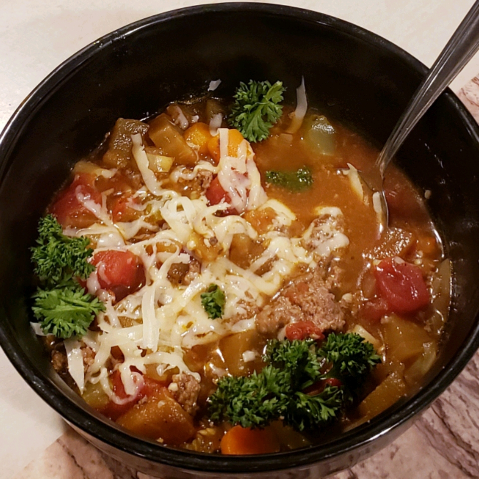

Eggplant Supper Soup

Description
Hearty eggplant soup made with ground beef and vegetables.
Ingredients
(yields 8 servings)
- 1 tables vegetable oil
- 1 medium onion, chopped
- 1 pound ground beef
- 1 clove garlic, crushed
- 1 pound eggplant, diced
- 3/4 cup sliced carrots
- 3/4 cup sliced celery
- 2 cans Italian diced tomatoes, drained
- 2 cans beef broth
- 1 teaspoons sugar
- 1/2 teaspoon ground nutmeg
- 1 teaspoons salt
- 1/2 teaspoon ground black pepper
- 1/2 cup dry macaroni
- 1/2 tablespuum and 1/2 teaspoon chopped fresh parsley
- 1/2 grated Parmesan cheese
Preparation
-
Heat the oil in a skillet over medium heat, and cook the onion, beef, and garlic until beef is evenly brown. Drain
grease, and mix in eggplant, carrots, celery, and tomatoes. Pour in beef broth. Mix in sugar, and season with
nutmeg,
salt, and pepper. Cook and stir until heated through.
-
Mix macaroni into the soup, and continue cooking 12 minutes, or until macaroni is al dente. Mix in parsley. Top
with
Parmesan chreese to serve.